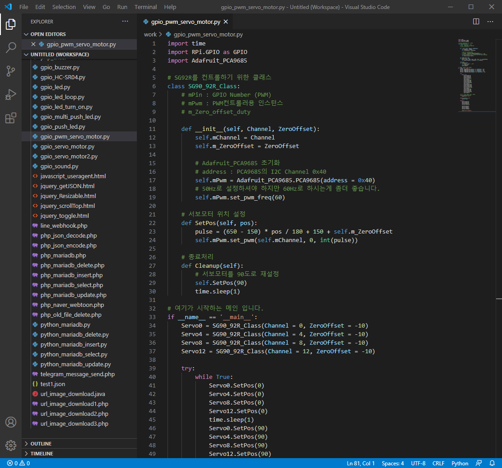
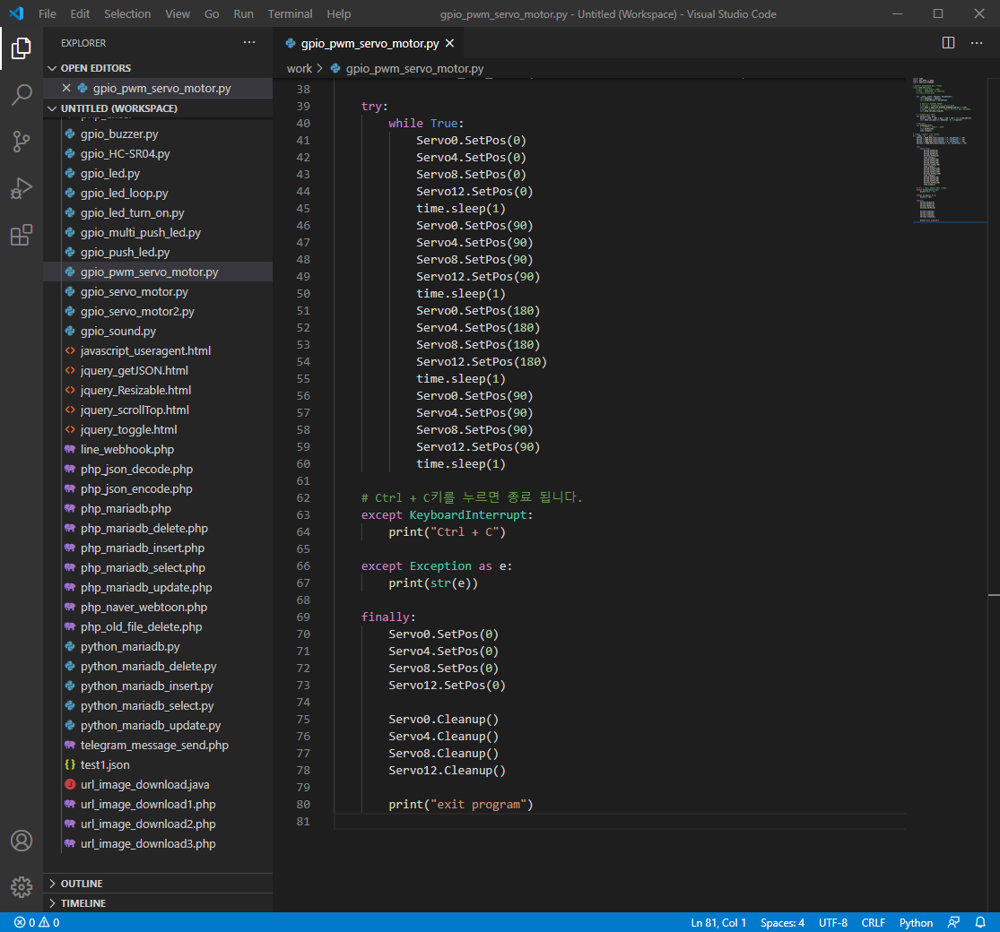
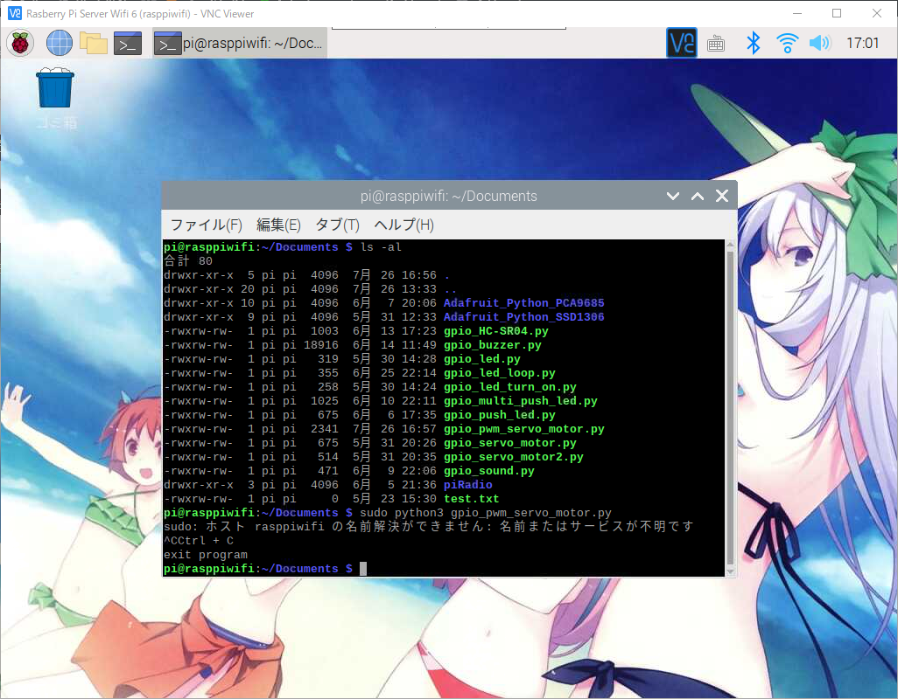

라즈베리파이에 GPIO Python PWM Servo Motor 4개 제어하기
안녕하세요.
이번에 소개할 내용은 라즈베리파이에서 GPIO Python PWM컨트롤러(PCA9685)로 Servo Motor 4개 제어하기 입니다.
기존의 라즈베리파이에 GPIO Python PWM Servo Motor 제어하기에 이어서 한번에 4개를 움직이는것을 해보도록 하겠습니다.
점퍼케이블 설정에 관해서는 라즈베리파이에 GPIO Python PWM Servo Motor 제어하기를 참고해 주시기 바랍니다.
이번에 사용한 서보모터는 Miuzei サーボモーター マイクロサーボ 9g 5個セット デジタル・サーボ라는 서보모터를 사용했습니다.
그럼 바로 코딩으로 들어가 보도록 하겠습니다.
Visual Studio Code(비주얼 스튜디오 코드)를 실행을 하신후 기존에 만들어둔 gpio_pwm_servo_motor.py에 추가로 코드를 작성해 보도록 하겠습니다.
1
2
3
4
5
6
7
8
9
10
11
12
13
14
15
16
17
18
19
20
21
22
23
24
25
26
27
28
29
30
31
32
33
34
35
36
37
38
39
40
41
42
43
44
45
46
47
48
49
50
51
52
53
54
55
56
57
58
59
60
61
62
63
64
65
66
67
68
69
70
71
72
73
74
75
76
77
78
79
80
| import time
import RPi.GPIO as GPIO
import Adafruit_PCA9685
class SG90_92R_Class:
def __init__(self, Channel, ZeroOffset):
self.mChannel = Channel
self.m_ZeroOffset = ZeroOffset
self.mPwm = Adafruit_PCA9685.PCA9685(address = 0x40)
self.mPwm.set_pwm_freq(60)
def SetPos(self, pos):
pulse = (650 - 150) * pos / 180 + 150 + self.m_ZeroOffset
self.mPwm.set_pwm(self.mChannel, 0, int(pulse))
def Cleanup(self):
self.SetPos(90)
time.sleep(1)
if __name__ == '__main__':
Servo0 = SG90_92R_Class(Channel = 0, ZeroOffset = -10)
Servo4 = SG90_92R_Class(Channel = 4, ZeroOffset = -10)
Servo8 = SG90_92R_Class(Channel = 8, ZeroOffset = -10)
Servo12 = SG90_92R_Class(Channel = 12, ZeroOffset = -10)
try:
while True:
Servo0.SetPos(0)
Servo4.SetPos(0)
Servo8.SetPos(0)
Servo12.SetPos(0)
time.sleep(1)
Servo0.SetPos(90)
Servo4.SetPos(90)
Servo8.SetPos(90)
Servo12.SetPos(90)
time.sleep(1)
Servo0.SetPos(180)
Servo4.SetPos(180)
Servo8.SetPos(180)
Servo12.SetPos(180)
time.sleep(1)
Servo0.SetPos(90)
Servo4.SetPos(90)
Servo8.SetPos(90)
Servo12.SetPos(90)
time.sleep(1)
except KeyboardInterrupt:
print("Ctrl + C")
except Exception as e:
print(str(e))
finally:
Servo0.SetPos(0)
Servo4.SetPos(0)
Servo8.SetPos(0)
Servo12.SetPos(0)
Servo0.Cleanup()
Servo4.Cleanup()
Servo8.Cleanup()
Servo12.Cleanup()
print("exit program")
|


코드 작성이 끝나셨으면 라즈베리파이의 적당한 위치에 올려주시기 바랍니다.
그리고 VNC로 라즈베리파이에 접속후 터미널을 실행해 주세요.
아래의 명령으로 gpio_pwm_servo_motor.py를 실행하도록 하겠습니다.
1
2
3
4
5
|
$ sudo python gpio_pwm_servo_motor.py
$ sudo python3 gpio_pwm_servo_motor.py
|
실행을 하시면 서보모터가 움직이는것을 확인 하실수 있습니다.
프로그램을 종료를 하실려면 Ctrl + C키를 누르면 종료 됩니다.
